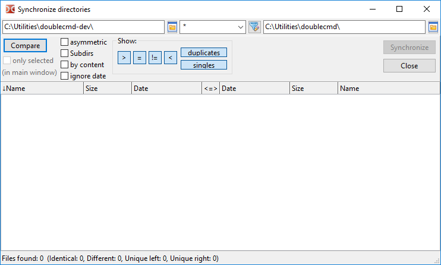
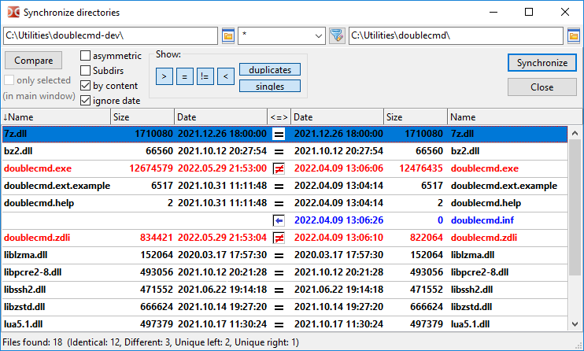
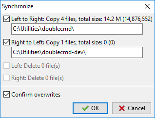

目录同步工具扫描左右文件面板的目录，显示其内容的差异，并允许将它们保持一致。
我们可以同步两个本地目录或一个本地目录与虚拟文件系统中的目录（一个开放的归档或文件系统插件中的目录）。
默认情况下，同步工具通过文件名、大小和修改日期来比较文件。
删除文件（移到垃圾箱（回收站）或永久删除）的方法取决于删除到回收站（Shift 键可反转此设置）选项的状态。
注意：空目录将被忽略。

在窗口顶部，有左侧和右侧文件面板的当前目录字段。我们可以手动更改它们或使用按钮选择目录。
在它们之间有一个字段用于通过掩码过滤文件（符号“*”表示匹配任意数量的字符，符号“？”表示匹配任意一个字符）。不匹配掩码的文件将被忽略。我们可以在这里使用分号“;”而不加空格来放置多种文件类型。我们还可以使用搜索模板（ ），包括使用内容插件的搜索。默认值为“*”（所有文件）。
比较 – 开始比较所选目录。比较操作的进度显示在状态栏中。如有必要，可以使用 Esc 键中断操作。
参数：
仅选定（在主窗口中） – 如果启用，则仅比较在文件面板中选定的文件和目录。
非对称 – 此选项旨在创建备份：左侧面板的内容应复制到右侧面板。左侧不存在的文件将在右侧标记为删除。如果右侧目录中无法进行删除操作，则此选项不可用（例如，它是一个归档文件，其格式不支持修改，或者它是一个 CD/DVD）。
子目录 – 允许递归文件搜索：Double Commander将检查所有子目录的内容。
按内容 – 如果启用，将按内容比较大小和日期相同的文件（逐字节比较）。如果第二个目录位于虚拟文件系统中，则不可用。
忽略日期 – 默认情况下，Double Commander 优先选择较新的文件并自动选择复制方向，但如果启用此选项，则相同大小的文件将被视为相同。
更改这些选项后，我们必须再次运行比较。
显示： – 一组按钮，用于启用或禁用在列表中显示各种文件组：
> – 在左侧显示要复制或删除的文件。
= – 显示被认为是相同的文件。
≠ – 显示不相同的文件。
< – 在右侧显示要复制或删除的文件。
重复文件 – 显示两边都存在的文件。
单独文件 – 显示仅存在于一侧的文件。
下面是一个分为三个部分的区域：
文件列表将显示在左侧和右侧。两个部分都包含“名称”、“大小”和“日期”列，我们可以通过点击标题来对文件进行排序。
中间列显示文件的状态或计划的操作。
状态栏显示比较的整体结果。
比较完成后，同步工具将使用几种颜色显示目录的内容：

绿色 – 在左侧选择要复制或删除的文件。
蓝色 – 右侧选定用于复制或删除的文件。
红色 – 文件名称相同，但内容不完全相同。
对于其余的文件，将使用默认文本颜色。
我们可以在颜色设置部分更改它们（同步目录类别）。
"<=>"列中的指定：
 – 未知;
– 未知;
– 相同的文件；
 – 不同的文件;
– 不同的文件;
 – 文件将被复制到右侧；
– 文件将被复制到右侧；
– 文件将被复制到左侧；
 – 文件将在左侧被删除；
– 文件将在左侧被删除；
– 文件将在右侧被删除；
 – 文件将在两边被删除；
– 文件将在两边被删除；
 – 什么都不做。
– 什么都不做。
使用鼠标或 Space 空格键，我们可以取消选中该操作并排除文件同步操作。
双击文件名会调用按内容比较命令。
使用键盘快捷键 Ctrl+C ，我们可以将所有列的内容复制到剪贴板。
关闭 – 关闭同步工具。
同步 – 打开一个对话窗口以确认同步，窗口显示即将进行的操作的一些细节：

在这里，我们可以按类型（复制或删除）或方向排除计划操作。
确认覆盖 – 如果发生名称冲突，Double Commander将使用与常规复制/移动文件相同的对话框，提供操作选项（跳过、重命名等）。
命令应用于光标下的文件或选定的文件。同步工具中所有可用的命令已添加到右键菜单中。我们可以在按键 > 快捷键设置部分为这些命令分配或更改热键（切换到同步目录类别）。
选择以便复制（默认方向） – Double Commander将重新检查文件并尝试自动选择操作。
取消选择 – 取消分配的操作，并将文件排除在同步过程之外。
选择以复制 -> (从左到右)
选择以复制 <- (从右到左)
反向复制方向。
查看左侧 和 查看右侧 – 在 文件查看器 中打开光标左侧或右侧的文件。
比较 – 调用 按内容比较 命令以比较光标下的文件。
选择删除 <- (左)。
选择以删除 -> (右侧)
选择删除 <->（两者）。
<- 删除左侧
-> 删除右侧
两侧删除。
最后三个命令会在同步操作之前立即删除选定的文件。在这种情况下，Double Commander会显示确认请求。
注意：命令的快捷键 查看左侧、查看右侧 和 比较 在 Double Commander 的源代码中设置，无法更改。